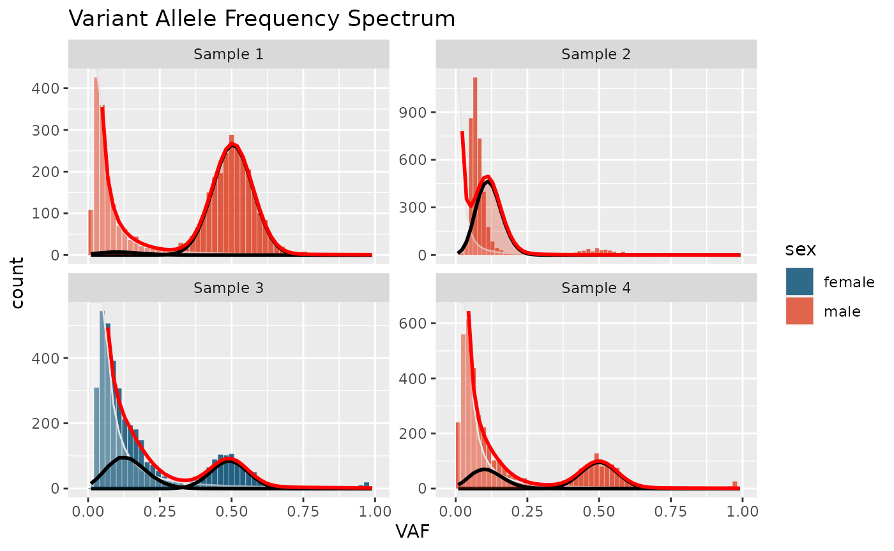

Get Started
get_started.Rmdcevodata
Page under construction
The main data structure used by cevomod is the cevodata S3 class. The
easiest way to prepare the object is to create an empty object using the
init_cevodata() constructor and populating the object with
the data using the add_*_data() methods.
Let’s use the list of SNV variants and the metadata from the small
attached artificial dataset test_data
suppressPackageStartupMessages({
library(cevomod)
library(tidyverse)
})
snvs <- SNVs(test_data)
sample_data <- test_data$metadata
snvs
#> <cevo_snvs> tibble
#> # A tibble: 16,000 × 11
#> sample_id chrom pos gene_symbol ref alt ref_reads alt_reads VAF
#> * <chr> <chr> <int> <chr> <chr> <chr> <int> <int> <dbl>
#> 1 Sample 1 chr1 1 NA NA NA 61 1 0.031
#> 2 Sample 1 chr1 2 NA NA NA 37 29 0.441
#> 3 Sample 1 chr1 3 NA NA NA 35 28 0.446
#> 4 Sample 1 chr1 4 NA NA NA 54 3 0.068
#> 5 Sample 1 chr1 5 NA NA NA 25 27 0.519
#> 6 Sample 1 chr1 6 NA NA NA 24 31 0.562
#> 7 Sample 1 chr1 7 NA NA NA 21 1 0.082
#> 8 Sample 1 chr1 8 NA NA NA 22 24 0.521
#> 9 Sample 1 chr1 9 NA NA NA 65 1 0.029
#> 10 Sample 1 chr1 10 NA NA NA 25 6 0.211
#> # ℹ 15,990 more rows
#> # ℹ 2 more variables: impact <chr>, DP <int>
sample_data
#> # A tibble: 4 × 3
#> sample_id patient_id sex
#> <chr> <chr> <chr>
#> 1 Sample 1 Patient 1 male
#> 2 Sample 2 Patient 2 male
#> 3 Sample 3 Patient 3 female
#> 4 Sample 4 Patient 4 maleMost of the cevomod functions are pipe-oriented, so we can create and populate the object through the small pipeline:
cd <- init_cevodata(name = "Demo data") |>
add_SNV_data(snvs, name = "snvs") |>
add_sample_data(sample_data)
cd
#> <cevodata> dataset: Demo data
#> Genome: unknown
#> SNV assays: snvs (default)
#> CNV assays: None
#> 4 cases, 4 samples, 1 sample per case
#> 16000 mutations total, 4000 +/- 0 mutations per case
#> Active models:name can be any string that is informative for the
user.
VAF spectra
cevomod models are fitted to the Variant Allele Frequency Spectra of
the samples. Spectra can be displayed with plot_SFS()
function (SFS - Site Frequency Spectrum). Most of the cevomod
plotting functions return a ggplot object which can be easily modified.
Additional aestetics can be added with the aes() function.
Since the metadata is left-joined to the plot data, the
metadata columns can be directly used in the eas()
call.
plot_SFS(cd) +
aes(fill = sex) +
scale_fill_manual(values = c(male = "#DD4124", female = "#00496F")) +
labs(title = "Variant Allele Frequency Spectrum")
#> Warning in geom_bar(join_aes(bar_mapping, mapping), stat = "identity", alpha =
#> alpha, : Ignoring unknown aesthetics: width
Preparation
Before the the models are fitted, we need to run the
prepare_SNVs() function. In this step VAF values are
binarized, and the VAF_interval column is added. By
default, the number of bins equals the median sequencing coverage of
variants in the sample. It allows to reduce the aliasing noise in the
samples with low-sequencing depth, and allow to analyze the samples with
the deeper coverage with a greater resolution. The desired number of
bins can also be specified manually, using the bins
argument.
cd <- cd |>
prepare_SNVs()
SNVs(cd) |>
glimpse()
#> Rows: 16,000
#> Columns: 12
#> $ sample_id <chr> "Sample 1", "Sample 1", "Sample 1", "Sample 1", "Sample 1…
#> $ chrom <chr> "chr1", "chr1", "chr1", "chr1", "chr1", "chr1", "chr1", "…
#> $ pos <int> 1, 2, 3, 4, 5, 6, 7, 8, 9, 10, 11, 12, 13, 14, 15, 16, 17…
#> $ gene_symbol <chr> NA, NA, NA, NA, NA, NA, NA, NA, NA, NA, NA, NA, NA, NA, N…
#> $ ref <chr> NA, NA, NA, NA, NA, NA, NA, NA, NA, NA, NA, NA, NA, NA, N…
#> $ alt <chr> NA, NA, NA, NA, NA, NA, NA, NA, NA, NA, NA, NA, NA, NA, N…
#> $ ref_reads <int> 61, 37, 35, 54, 25, 24, 21, 22, 65, 25, 31, 30, 58, 13, 2…
#> $ alt_reads <int> 1, 29, 28, 3, 27, 31, 1, 24, 1, 6, 18, 33, 1, 1, 39, 30, …
#> $ VAF <dbl> 0.031, 0.441, 0.446, 0.068, 0.519, 0.562, 0.082, 0.521, 0…
#> $ impact <chr> "MODIFIER", "MODIFIER", "MODIFIER", "MODIFIER", "MODIFIER…
#> $ VAF_interval <chr> "(0.0196,0.0392]", "(0.431,0.451]", "(0.431,0.451]", "(0.…
#> $ DP <int> 62, 66, 63, 57, 52, 55, 22, 46, 66, 31, 49, 63, 59, 14, 6…Model fitting
When the SNVs are prepared, the models can be fitted with the
fit_*() functions. Full model consist of the power-law
component and one or more binomial components, which are fitted
sequentially.
In this example, we first fit the power-law model with the exponent equal to 2, and then the mixture of binomial models.
cd <- cd |>
fit_powerlaw_tail_fixed() |>
fit_subclones()
#> Fitting binomial models
#> Fitting williams neutral models...
#> Mf_1f's not calculated yet. Calculating with default bins
#> Calculating Williams's M(f) ~ 1/f statistics
#> SFS's not calculated yet. Calculating with sample DP as number of bins
cd
#> <cevodata> dataset: Demo data
#> Genome: unknown
#> SNV assays: snvs (default)
#> CNV assays: None
#> 4 cases, 4 samples, 1 sample per case
#> 16000 mutations total, 4000 +/- 0 mutations per case
#> Active models: powerlaw_fixed_subclonesThe fitted models can be listed with:
get_model_names(cd)
#> [1] "powerlaw_fixed" "powerlaw_fixed_subclones"and the last fitted model is the active one:
cd$active_models
#> [1] "powerlaw_fixed_subclones"Models can be viewed with the get_models() function:
get_models(cd, which = "powerlaw_fixed")
#> # A tibble: 4 × 11
#> sample_id model component from to length A b alpha rsquared best
#> <chr> <chr> <chr> <dbl> <dbl> <dbl> <dbl> <dbl> <dbl> <dbl> <lgl>
#> 1 Sample 1 willi… Neutral … 0.185 0.235 0.05 42.8 2348. 2 0.980 TRUE
#> 2 Sample 2 willi… Neutral … 0.215 0.265 0.05 25.5 299. 2 0.989 TRUE
#> 3 Sample 3 willi… Neutral … 0.285 0.335 0.05 102. 595. 2 0.982 TRUE
#> 4 Sample 4 willi… Neutral … 0.265 0.315 0.05 67.4 800. 2 0.980 TRUEThe active model is returned if the which argument is
left empty:
get_models(cd)
#> # A tibble: 11 × 18
#> sample_id model component from to length A b alpha rsquared
#> <chr> <chr> <chr> <dbl> <dbl> <dbl> <dbl> <dbl> <dbl> <dbl>
#> 1 Sample 1 binomial… Clone NA NA NA NA NA NA NA
#> 2 Sample 1 binomial… Subclone… NA NA NA NA NA NA NA
#> 3 Sample 1 williams Neutral … 0.185 0.235 0.05 42.8 2348. 2 0.980
#> 4 Sample 2 binomial… Clone NA NA NA NA NA NA NA
#> 5 Sample 2 williams Neutral … 0.215 0.265 0.05 25.5 299. 2 0.989
#> 6 Sample 3 binomial… Clone NA NA NA NA NA NA NA
#> 7 Sample 3 binomial… Subclone… NA NA NA NA NA NA NA
#> 8 Sample 3 williams Neutral … 0.285 0.335 0.05 102. 595. 2 0.982
#> 9 Sample 4 binomial… Clone NA NA NA NA NA NA NA
#> 10 Sample 4 binomial… Subclone… NA NA NA NA NA NA NA
#> 11 Sample 4 williams Neutral … 0.265 0.315 0.05 67.4 800. 2 0.980
#> # ℹ 8 more variables: best <lgl>, N <int>, cellularity <dbl>,
#> # N_mutations <dbl>, BIC <dbl>, sequencing_DP <dbl>,
#> # has_overlapping_clones <lgl>, max_BIC <dbl>The tibble lists all parameters of all modeled samples. Bino
Plot models
The fitted models can be visualized with the
plot_models() function:
plot_models(cd) +
aes(fill = sex) +
scale_fill_manual(values = c(male = "#DD4124", female = "#00496F")) +
labs(title = "Variant Allele Frequency Spectrum")
#> Warning in geom_bar(join_aes(bar_mapping, mapping), stat = "identity", alpha =
#> alpha, : Ignoring unknown aesthetics: width
Model fitted to the Sample 2 is very inacurrate. The slope of the distribution is too step to be approximated with the power-law exponent of 2. This sample should not be fitted the model with the fixed power-law component. For the rest of samples we can use the equations provided by Williams et al. to estimate the evolutionary parameters of the subclones.
Evolutionary parameters
The evolutionary parameters are estimated for the subclonal components of the models. The binomial components with the highest frequency are called Clones and no parameters are estimated for them.
get_models(cd) |>
filter(str_detect(component, "Subclone"))
#> # A tibble: 3 × 18
#> sample_id model component from to length A b alpha rsquared best
#> <chr> <chr> <chr> <dbl> <dbl> <dbl> <dbl> <dbl> <dbl> <dbl> <lgl>
#> 1 Sample 1 binom… Subclone… NA NA NA NA NA NA NA TRUE
#> 2 Sample 3 binom… Subclone… NA NA NA NA NA NA NA TRUE
#> 3 Sample 4 binom… Subclone… NA NA NA NA NA NA NA TRUE
#> # ℹ 7 more variables: N <int>, cellularity <dbl>, N_mutations <dbl>, BIC <dbl>,
#> # sequencing_DP <dbl>, has_overlapping_clones <lgl>, max_BIC <dbl>For the model with the power-law exponent equal to 2, have proposed an equations to estimate the evolutionary parameters such as
get_selection_coefficients(cd)
#> # A tibble: 3 × 8
#> sample_id mutation_rate_williams component N_mutations subclone_frequency
#> <chr> <dbl> <chr> <dbl> <dbl>
#> 1 Sample 1 42.8 Subclone 1 62 0.233
#> 2 Sample 3 102. Subclone 1 826 0.275
#> 3 Sample 4 67.4 Subclone 1 546 0.222
#> # ℹ 3 more variables: emergence_time <dbl>, time_end <dbl>, selection <dbl>